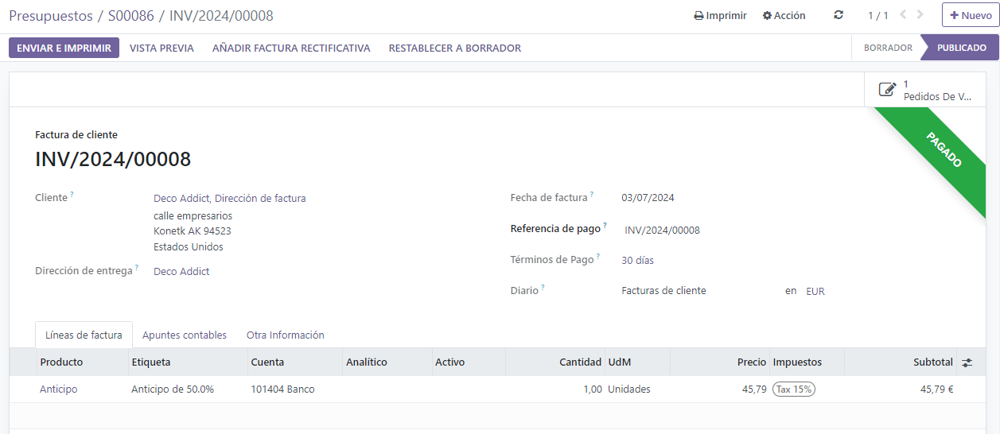

Anticipos¶
Un anticipo es un pago parcial que realiza el comprador cuando se celebra un contrato de venta. Esto implica el compromiso total de ambas partes (vendedor y comprador) de cumplir el contrato.
Con un anticipo, el comprador paga una parte del importe total adeudado mientras acepta pagar la cantidad restante después. Por otra parte, el vendedor le proporciona los bienes o servicios al comprador después de aceptar el anticipo, confiando en que este le pagará el importe restante más adelante.
Crear facturas¶
Cuando se confirma una orden de venta, se habilita la opción de crear una factura mediante el botón Crear factura ubicado en la esquina superior izquierda del formulario de orden de venta. Cuando hace clic, aparece la ventana emergente Crear facturas.

Nota
Las facturas se crean como borradores de forma automática para que las pueda revisar antes de validarlas.
En la ventana emergente Crear facturas, hay 3 opciones para elegir en el campo Crear factura:
Factura normal
Anticipo (porcentaje)
Anticipo (importe fijo)
Nota
Los otros campos desaparecen si selecciona factura normal, ya que solo corresponden a las configuraciones de anticipos.
Solicitud inicial de un anticipo¶
En el formulario emergente para crear facturas, las opciones para anticipos son:
Anticipo (porcentaje)
Anticipo (importe fijo)
Una vez que haya seleccionado la opción de anticipo deseada en el campo Crear factura, indique el importe (ya sea como porcentaje o importe fijo) en el campo Importe del anticipo.
Después, seleccione la cuenta de ingresos apropiada para la factura en el campo Cuenta de ingresos. Después, seleccione la cantidad de impuestos en el campo desplegable Impuestos del cliente, solo si es necesario.

Una vez que los campos tengan la información deseada, haga clic en el botón Crear borrador de factura. Una vez hecho eso, Odoo le mostrará el Borrador de la factura del cliente.
En la pestaña Líneas de factura del Borrador de la factura del cliente aparecerá como un guilabel:Producto el anticipo que acaba de configurar en el formulario emergente Crear facturas.

Nota
Cuando hace clic en el producto Anticipo desde la pestaña Líneas de factura aparecerá el formulario del producto para el anticipo.
De manera automática, el Tipo de producto de los anticipos generados para las facturas será Servicio, con la política de facturación configurada a Precio fijo o de prepago.

Puede editar o modificar este producto en cualquier momento.
Advertencia
Si selecciona:guilabel:Basado en cantidad entregada (manual) como política de facturación no podrá crear una factura.
Por ejemplo: solicitar un anticipo del 50%¶
Nota
El siguiente ejemplo involucra un anticipo del 50% en un producto (Gabinete con puertas) cuya política de facturación es Cantidades ordenadas.

Primero navegue a y agregue un Cliente a la cotización.
Después, haga clic en Agregar un producto en la pestaña de lineas de la orden y seleccione el producto gabinete con puertas.
Cuando se confirma la orden (al apretar el botón Confirmar) la cotización se convertirá en una orden de venta. Una vez que esto suceda, para crear la factura solo haga clic en Crear factura.
Después, en la ventana emergente Crear facturas que aparece, seleccione Anticipo (porcentaje) y escriba 50 en el campo Importe del anticipo.
Nota
Los campos de cuenta de ingresos e impuestos de clientes no son campos obligatorios y no aparecerán si ya se configuraron en una solicitud de pago previa.
Para más información, revise nuestra documentación sobre modificación de impuestos del cliente en anticipos y modificación de la cuenta de ingresos en anticipos.
Finalmente, haga clic en crear un borrador de factura para crear un borrador de factura.
Al hacer clic en crear borrador de factura se mostrará el borrador de la factura, el cual incluye el anticipo como un Producto en la pestaña de líneas de factura.
Aquí puede confirmar y publicar la factura, solo debe hacer clic en Confirmar y el estado cambiará de borrador a publicado. También muestra una nueva serie de botones en la parte superior de la página.

Puede registrar el pago si hace clic en Registrar pago.

Al hacerlo se mostrará la ventana emergene Registrar pago, que se llenará de forma automática con la información necesaria. Confirme que la información sea correcta y haga los ajustes necesarios. Cuando esté listo, haga clic en el botón Crear pago.

Después de hacer clic en Crear pago Odoo mostrará la factura del cliente, ahora con un listón verde de En proceso de pago en la esquina superior derecha.
Cuando el cliente quiera pagar la cantidad restante de la orden, deberá crear otra factura. Para ello, use las migas de pan para regresar a la orden de venta.
En la orden de venta habrá una nueva sección de Adelantos en la pestaña Líneas de la orden, junto con el anticipo que acaba de facturar.

Después, haga clic en el botón Crear factura.
On the Create invoices pop-up window that appears, there is a new field: Deducir anticipo

Si ya se pagará la cantidad restante, seleccione la opción Factura normal. Odoo creará una factura por la cantidad exacta que se necesita para completar el total del pago, como se indica en el campo Cantidad por facturar.
Ya que esté listo, haga clic en crear borrador de factura.
Al hacer esto verá la página borrador de factura de cliente, la cual enumerará todas las facturas para esa orden de venta específica en la pestaña líneas de factura. Cada elemento de línea de factura muestra toda la información necesaria relacionada con cada factura.
Para completar el flujo, haga clic en confirmar, lo cual cambiará el estado de la factura de borrador a publicado. Luego, haga clic en registrar pago.
Una vez más, aparecerá registrar pago, con todos los campos autocompletados con la información necesaria, incluido el monto restante que queda por pagar en la orden.
Después de confirmar esa información, haga clic en crear pago. Al hacerlo, se mostrará la factura del cliente final con un listón verde con la leyenda en proceso de pago en la esquina superior derecha. Además, podrá ver ambos pagos iniciales en la pestaña líneas de factura.
Si llega a este punto ha terminado el flujo.
Nota
Este flujo también se puede realizar con la opción de anticipo por importe fijo.
Importante
Si se utiliza un anticipo para un producto que tiene una política de facturación por cantidades entregadas, no se podrá deducir al momento de crear la factura para el cliente.
Esto se debe a que, debido a la política de facturación, los productos se deben entregar antes de crear la última factura.
Si no ha entregado ningún producto se creará una nota de crédito, la cual cancelará el borrador de factura que se creó después del anticipo.
Si desea utilizar la opción de nota de crédito, deberá contar con la aplicación Inventario para poder confirmar la entrega. De lo contrario, puede registrar la cantidad entregada de forma manual directamente en la orden de venta.
Modificación de impuestos del cliente en los anticipos¶
Para ajustar la cuenta de ingresos y los impuestos del cliente vinculados a un anticipo, vaya a la página de productos (aplicación ), luego escriba anticipo en la barra de búsqueda y seleccione el producto para abrir su página de detalles.
En la página del producto anticipo bajo la pestaña información general, en el campo impuestos del cliente, podrá modificar los impuestos del cliente.

Modificación de la cuenta de ingresos en los anticipos¶
Si desea cambiar o ajustar la cuenta de ingresos asociada a la página del producto anticipo, debe contar con la aplicación Contabilidad.
Si tiene la aplicación Contabilidad instalada, podrá ver la pestaña Contabilidad en la página del producto. Si no tiene la aplicación Contabilidad no podrá ver esta pestaña.
En la pestaña Contabilidad, puede modificar la cuenta de ingresos desde el campo correspondiente en la sección Por cobrar.